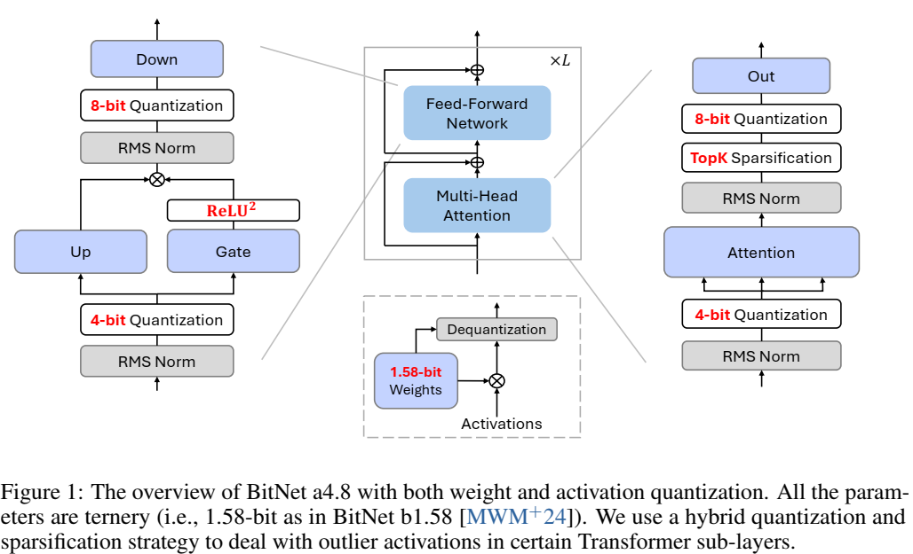
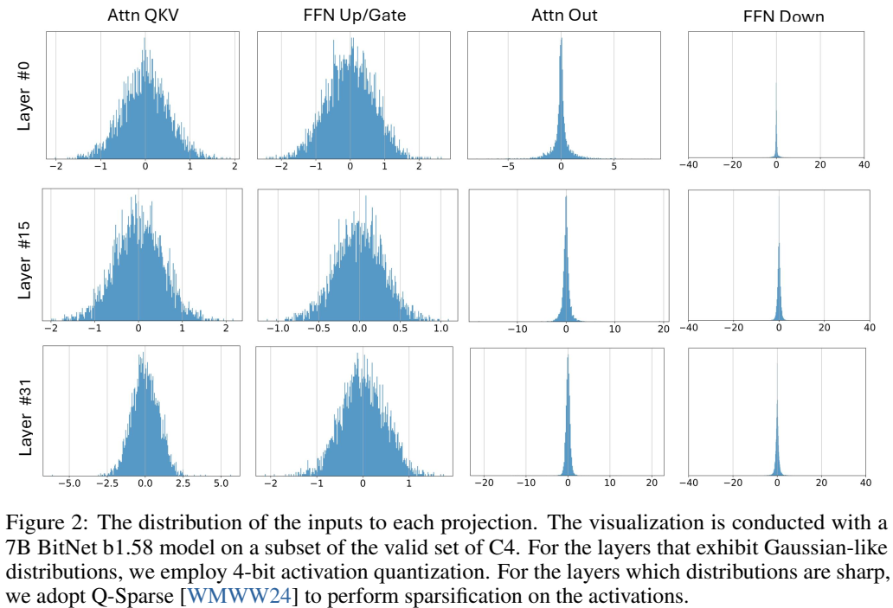
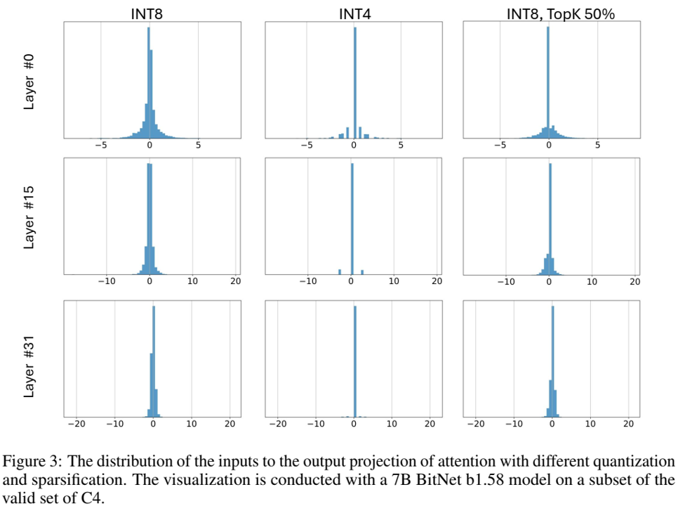

论文阅读十：BitNet a4.8：1位LLM的4位激活
摘要
最近对1位大型语言模型（LLM）的研究，如BitNet b1.58[MWM+24]，为降低LLM的推理成本同时保持其性能提供了一个有前景的方向。在这项工作中，我们引入了BitNet a4.8，为1位LLM启用4位激活。BitNet a4.8采用混合量化和稀疏化策略来减轻异常信道引入的量化误差。具体来说，我们利用4位激活作为注意力和前馈网络层的输入，同时对中间状态进行稀疏化，然后进行8位量化。大量实验表明，BitNet a4.8在同等训练成本下实现了与BitNet b1.58相当的性能，同时通过启用4位（INT4/FP4）内核实现了更快的推理。此外，BitNet a4.8仅激活55%的参数，并支持3位KV缓存，进一步提高了大规模LLM部署和推理的效率。论文地址
BitNet a4.8 的概览，包括权重和激活量化。所有参数都是三元的（即 BitNet b1.58 [MWM+24] 中的 1.58 位）。我们使用混合量化和稀疏化策略来处理某些 Transformer 子层中的异常激活。

引言
最近的工作[MWM+24]已经证明1位LLMs可以匹配全精度模型，给定同样数量的参数和训练标记，同时对于延迟、内存、吞吐量和能源消耗都十分成本高效。模型权重以1.58位（如，{-1，0，1}）表示，推理瓶颈已经从内存带宽限制转移到更计算成本。LLMs中低位或者稀疏激活作为有前景的方法进一步降低了计算预算，同时保持在下游任务上的性能。
一个常用的方法是利用激活稀疏[ , , ]，它减少推理FLOPs和权重I/O，通过使用较小的幅度剪枝激活条目。稀疏化尤其适用于处理具有高度不平衡长尾分布的激活。最近的工作[WMWW24]已经证明具有全激活稀疏的激活函数的LLMs可以获得于密集模型可比拟的结果，同时有较少的激活参数。
除了稀疏化，激活量化是加速矩阵乘法的另一方式。然而，低位激活的神经网络的优化具有挑战性，因为随着训练进行和模型尺寸增加，异常维度会出现。尽管这些异常仅覆盖非常小比例的激活[DLBZ22， ],它们具有非常大的幅度，在下游任务中导致明显的量化误差和性能下降。先前的工作[XLCZ23, AMC+24,LZF+24,LXW+24]大多利用Hadamard或者可学习旋转变换来摊销异常特征到其他条目。然而，它们大多设计用于更高精度（比如，4位）的LLMs。对于1位LLMs，极其低的权重位宽使得直接吸收这些变换矩阵到权重具有挑战性，同时将其作为在线变换引入额外的计算开销，限制整体推理性能。
本工作中，我们介绍BitNet a4.8，一个混合量化和稀疏策略实现1位LLMs的4位激活。通过仔细分析1位LLMs的激活分布，我们选择性地应用4位量化或稀疏，基于这些激活的分布模式。具体地，如图1所示，BitNet a4.8为到注意力和FFN的输入使用4位激活，同时位中间状态利用8位的稀疏化。为了改善训练效率，BitNet a4.8使用两阶段方式从8位到4位激活进行训练，在训练的结束，仅需少量训练标记来调整BitNet b1.58到低位激活。大量实验证明，BitNet a4.8对于BitNet b1.58取得竞争力的性能，使用同样的训练成本，同时在推理时明显更高效。此外，BitNet a4.8仅有55%的激活参数，且支持3位KV缓存，进一步增强了LLM部署的效率。
BitNet a4.8
架构
如图1所示，BitNet a4.8采用于BitNet b1.58同样的布局。遵循[WMD+23，MWM+24]，我们将注意力和前馈网络（FFN）中的线性投影替换为BitLinear，从头来学习1.58位权重。对于激活，我们采用混合量化和稀疏化策略来缓解异常维度引入的误差。
图2展示了7B模型大小的BitNet b1.58的每个组件输入的分布。注意力和FFN层的输入经典地服从类高斯分布，注意力和FFN层的输入通常遵循类高斯分布，而注意力中FFN向下投影和输出投影之前的激活具有更多的异常通道和大量零附近的条目。[LPC+24]还报告了全精度LLMs的类似观测。如图3所示，直接应用低位量化到这些中间状态引入了大量量化误差。
每个投影的输入分布。可视化是由7B BitNet b1.58模型在C4验证集的一个子集上执行的。对于显示类高斯分布的层，我们使用4位激活量化。对于分布尖锐的层，我们采用Q-Sparse[WMWW24]来执行激活上的稀疏化。

不同量化和稀疏化的注意力输入到输出投影的分布。可视化是由7B BitNet b1.58模型在C4验证集的一个子集上执行的。

因此，我们使用来自Q-Sparse[WMWW24]的稀疏化方法来保持这些中间状态在8位，同时消除计算瓶颈。对于自注意力层的输出映射，我们使用稀疏再量化的函数：
其中， 和 分别表示权重W和激活X的量化函数。M是掩码张量，表示激活X的绝对值的最大前K个元素， 是逐元素乘法操作。
具体地，权重量化和激活量化的函数可以公式化为：
对于FFN，我们采用平方ReLUctant[SML+21，WMWW24]和门控线性单元（GLU）来进一步促进激活稀疏性。定义如下：
根据我们初步实验，使用平方ReLU，乡下投影的输入获得超过80%的稀疏性，对性能影响最小。此外，我们观测到门控投影 的输出也展示了高激活稀疏（即，对于7B模型，为67.5%）。对于向上投影，这个特点能够进一步降低推理FLOPs，通过首先计算门控投影，然后仅在门控的非零通道执行向上投影。
对于注意力和FFN的输入，由于它们由更少的异常特征，我们使用绝对均值函数来量化激活到4位整数：
训练
从BitNet b1.58继续训练
梯度近似
浮点数量化
实验
主要结果
消融研究
更多训练标记
结论
本文中，我们展示BitNet a4.8，它实现了1位LLMs的4位激活。BitNet a4.8使用新颖的混合量化和稀疏化架构来减少由激活的异常通道引入的量化误差。具体地，我们位注意力和FFN层的输入使用4位量化，同时使用8位整数稀疏化中间状态。BitNet a4.8是从W1.58A8继续训练到W1.58A4。实验结果证明，BitNet a4.8取得与BitNet b1.58可比拟的结果，使用同样的训练成本，同时显著增强推理效率。